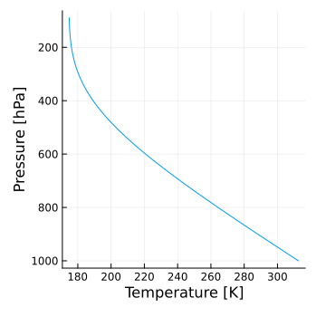
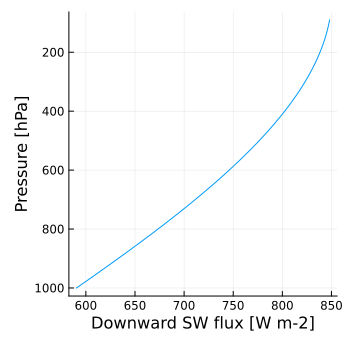
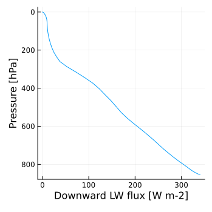
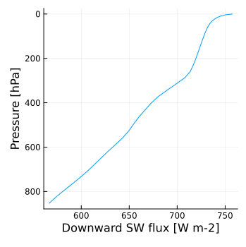
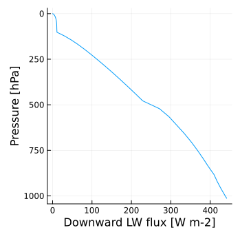
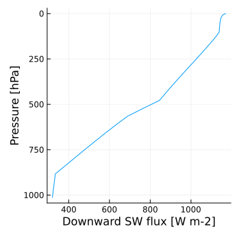

Example
The quickest way to run RRTMGP is the standalone gray-atmosphere one-liner, which needs no NetCDF data. It builds its column internally, with temperatures on the analytic semi-gray radiative-equilibrium profile of [5], $T(p) = T_t\,[1 + d_0\,(p/p_0)^α]^{1/4}$, where $T_t = 200$ K is the temperature at the top of the atmosphere and the optical depth $d_0$ follows from a latitude-dependent radiative-equilibrium surface temperature (a single column defaults to the equator):
using RRTMGP
out = RRTMGP.solve_gray(Float64; nlay = 60, ncol = 1);
out.net[end, 1] # net flux at the top of the atmosphere [W/m²]-505.69372519572903To assemble the pieces yourself (the atmospheric state, the RTE workspaces, and solve_lw!/solve_sw!), see The functional core, which walks through the gray problem and sketches the clear-sky path.
Beyond that, the test suite doubles as a set of complete, validated examples, run from the repository root with the test project (julia --project=test). The gray driver checks the solvers against analytic solutions. The clear-sky and all-sky drivers build their states from standardized NetCDF inputs and compare the computed fluxes against the official results of the Fortran reference implementation rte-rrtmgp for the RFMIP clear-sky and all-sky cases, distributed through the rrtmgp-data repository and downloaded automatically as artifacts (see test/reference_files.jl). This is the same source of truth the Fortran implementation validates against, so the tolerances are directly comparable.
Gray radiation
test/gray_atm.jl exercises longwave and shortwave gray radiation with both the non-scattering and two-stream solvers. For longwave-only gray radiation, an analytical radiative-equilibrium solution exists; gray_atmos_lw_equil integrates to equilibrium and compares against it:
julia> include("test/gray_atm_utils.jl");
julia> gray_atmos_lw_equil(ClimaComms.context(), TwoStreamLWRTE, Float64);
Test PassedHere is the vertical profile of temperature (T_ex_lev) in radiative equilibrium:

gray_atmos_sw_test computes shortwave-only gray fluxes and compares to the exact solution:
julia> gray_atmos_sw_test(ClimaComms.context(), TwoStreamSWRTE, Float64, 1);
Test PassedHere is the vertical profile of the downward shortwave radiative flux (flux_dn_dir):

Gas optics (clear sky)
test/clear_sky.jl runs RRTMGP for the RFMIP clear-sky atmosphere states and compares the results to the reference fluxes (running the file drives both longwave solver types and the two-stream shortwave solver at ncol = 250):
julia> include("test/clear_sky.jl")Here are the vertical profiles of downward longwave (flux_dn_lw) and shortwave (flux_dn_sw) fluxes for the first column:


Cloud and aerosol optics (all sky)
test/all_sky_with_aerosols.jl runs RRTMGP for all-sky atmosphere states with idealized clouds (uniform condensate and particle size in the troposphere, McICA cloud sampling) plus MERRA aerosols, and compares the results to the reference fluxes:
julia> include("test/all_sky_with_aerosols.jl")Here are the vertical profiles of downward longwave (flux_dn_lw) and shortwave (flux_dn_sw) fluxes for the first column:


Related datasets
The rte-examples repository provides standardized input datasets (RFMIP, CKDMIP evaluation profiles, an idealized RCE profile) without committed reference fluxes; since its problems overlap the RFMIP cases already covered here, RRTMGP.jl does not vendor it. Its idealized RCE setup is realized instead as the radiative-convective equilibrium tutorial.